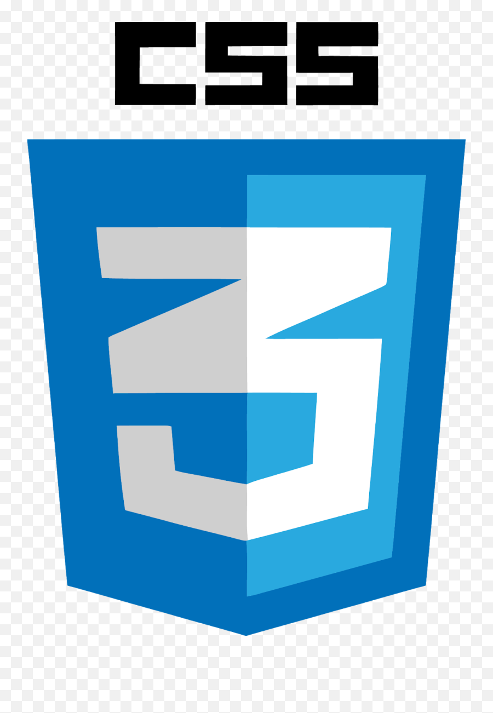
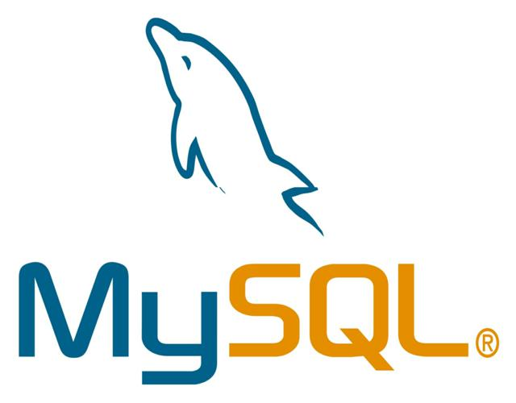

Je me présente, je m'appelle Karina Salles Milheiro. Je suis en deuxième année de BTS SIO (Services Informatiques aux Organisations) option SLAM (Solutions Logicielles et Applications Métiers) au sein du lycée du Parc des Loges à Évry-Courcouronnes. Voici mon portfolio, vous y trouverez mes études, mes certifications, ma veille technologique ainsi que les projets professionnels que j'ai pu entreprendre.
Séjour de cohésion dans le Tarn (81) de 15 jours
À Évry (91) (12 jours/84h) - Découverte du métier
STMG option SIG (Systèmes d’Information et de Gestion)
Bases développement web & réseaux (PHP/SQL)

CSS
SQL Canva
Canva